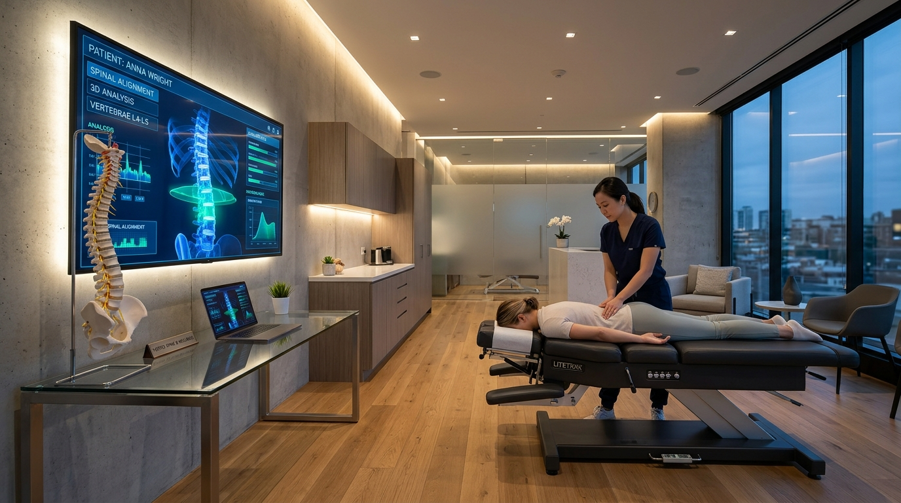
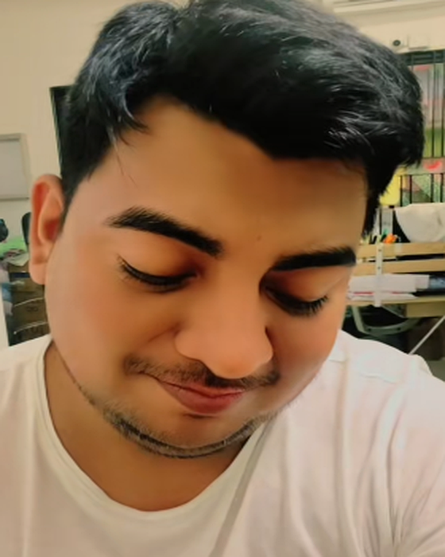
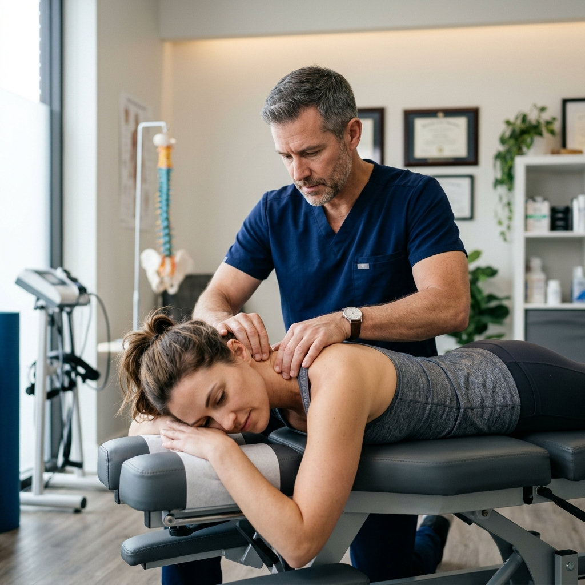

Recupera tu movilidad y vive sin dolor de espalda ni cuello.
Atención clínica personalizada por el Dr. Dany (@elsuggardany). No es solo tronar huesos: combinamos diagnóstico médico integral, radiología y ajustes biomecánicos precisos para liberar tus nervios y restaurar tu vitalidad.

Técnicas manuales sin cirugía
Formación Médica
Diagnóstico clínico con base científica
Revisión de Radiografías
Evaluación de columna milimétrica
Ajustes Indoloros
Técnicas suaves y de alta efectividad
Trato Humano y Cercano
Tu salud en manos de confianza


"No solo trato el síntoma, entiendo el origen de tu dolor."
Hola, soy el Dr. Dany (conocido en redes como @elsuggardany). Mi pasión por la salud nació del deseo genuino de transformar vidas. A diferencia de un huesero tradicional, mi enfoque combina la medicina clínica con la quiropráctica biomecánica.
"Ser papá y médico me enseñó que la salud no se posterga. Pasé de preocuparme por la vida, a ocuparme de devolverle la calidad de vida a cada paciente que entra por mi puerta."
Identifico hernias, contracturas, discopatías y subluxaciones antes de aplicar cualquier maniobra.
Buscamos tu recuperación natural a través de alineación articular, descompresión y relajación muscular.
Más de 100 mil personas siguen el Diario de un Doctor para aprender sobre su cuerpo y salud.
Tratamientos que Devuelven la Armonía a tu Cuerpo
Cada sesión es un protocolo médico adaptado a tu condición, historial y nivel de dolor.
Ajuste y Alineación Integral de Columna
Corrección precisa de subluxaciones vertebrales para liberar los nervios espinales comprimidos, optimizando el flujo nervioso y la postura.
- Alivia la presión sobre discos vertebrales
- Mejora la movilidad instantánea
- Disminuye dolores crónicos de espalda
Alivio de Ciática y Dolor Lumbar Agudo
Descompresión manual del nervio ciático para frenar el ardor, punzadas o adormecimiento que baja desde el glúteo hasta la pierna y el pie.
- Descompresión de raíces nerviosas L4-L5-S1
- Reducción de inflamación sin fármacos pesados
- Recuperación de la marcha y descanso nocturno
Ajuste Cervical, Cuello y Cefaleas Tensionales
Liberación de la rigidez en el cuello, mareos tensionales y dolores de cabeza provocados por el estrés cotidiano y el uso prolongado de pantallas.
- Desbloqueo de vértebras C1 a C7
- Adiós a la sensación de "pesadez en los hombros"
- Prevención de rectificación cervical
Terapia Miofascial y Descarga Muscular
Técnica enfocada en disolver nudos musculares profundos, contracturas severas y sobrecarga física por entrenamiento o malas posturas laborales.
- Liberación de contracturas en espalda y cuello
- Ideal para deportistas y oficinistas
- Estimula la microcirculación y oxigenación
Valoración Médica & Análisis Radiológico
Evaluación exhaustiva de tus estudios de imagen (radiografías o resonancias), pruebas ortopédicas de rango articular y reflejos neurológicos.
- Detección de escoliosis, lordosis o hernias
- Explicación clara y sin rodeos de tu caso
- Certeza total antes de cualquier maniobra
Reeducación Postural & Mantenimiento
Un plan preventivo para que el dolor no regrese jamás. Rutinas de fortalecimiento para el core y pautas ergonómicas para tu día a día.
- Rutina guiada de estiramientos específicos
- Corrección de hábitos al sentarse o dormir
- Mayor energía y confort corporal diario
¿Dónde Sientes el Dolor? Descubre el Tratamiento Ideal
Selecciona tu zona de molestia para darte una recomendación clínica inicial y hablar directamente con el Dr. Dany.
Ajuste Cervical y Descompresión Suboccipital
La rigidez en cuello suele deberse a compresión de vértebras C1-C7 por tensión, mala almohada o postura en computadora. Un ajuste quiropráctico devuelve el rango de giro y disuelve las cefaleas tensionales en minutos.
El "Diario de un Doctor" que Siguen Miles
Transparencia, empatía y casos reales. Mira cómo el Dr. Dany comparte la realidad de la medicina, su vida familiar y el alivio de sus pacientes.
¿Cómo es una Consulta con el Dr. Dany?
Un proceso claro, empático y 100% seguro desde el primer minuto.
Entrevista y Diagnóstico
Escuchamos tu historia: cuándo empezó el dolor, revisamos tus estudios previos y evaluamos la movilidad de cada vértebra.
Ajuste Personalizado
Maniobras manuales suaves y controladas. Sentirás cómo la presión se disipa inmediatamente y tu cuerpo recupera su eje.
Plan de Mantenimiento
Te enseñamos ejercicios ergonómicos y estiramientos para que mantengas tu alineación y nunca vuelvas al dolor severo.
Lo que Dicen Quienes ya Volvieron a Moverse Sin Dolor
Historias reales de personas que encontraron alivio tras semanas o meses de dolor.
"Llevaba 3 meses con un dolor de ciática insoportable que no me dejaba ni manejar. Fui con el Dr. Dany tras verlo en TikTok y en la primera sesión sentí un alivio del 80%. Es súper profesional y muy humano."
"Tenía miedo de que me tronaran el cuello, pero al saber que Dany también es médico me dio toda la confianza del mundo. El ajuste cervical me quitó las migrañas que me daban por trabajar en computadora."
"Increíble el trato. No es de esos lugares donde te atienden a las prisas. Se tomó el tiempo de explicarme mis radiografías y la descarga muscular me dejó como nuevo. 100% recomendado."
Preguntas Frecuentes sobre el Ajuste Quiropráctico
Todo lo que necesitas saber antes de tu primera consulta médica.
No. Las técnicas quiroprácticas modernas realizadas por un profesional médico son suaves, precisas y controladas. La mayoría de los pacientes describen una sensación inmediata de alivio, ligereza y liberación de presión acumulada.
Significa que cuentas con el respaldo de un diagnóstico médico riguroso. El Dr. Dany sabe cuándo un dolor proviene de un nervio, de un músculo, de una hernia o de una condición interna, interpretando radiografías y estudios con criterio clínico antes de intervenir.
Ese sonido característico se llama cavitación articular. Ocurre cuando se libera una pequeña burbuja de gas acumulada en el líquido sinovial que rodea la articulación al descomprimirla. No es fricción ni daño a tus huesos; al contrario, libera presión interna.
Más del 90% de los pacientes sienten un alivio significativo desde la primera sesión. Dependiendo de si tu molestia es aguda o si llevas años con una mala postura, el Dr. Dany te sugerirá un plan óptimo para resolver el problema de raíz.
Sí, pero se requiere una valoración previa con tus estudios de imagen. Como médico, el Dr. Dany adaptará las maniobras mediante técnicas suaves de tracción y movilización que protegen las zonas operadas o con discos comprometidos.
Da el Primer Paso para Vivir Sin Dolor
Llena el formulario para generar tu solicitud de cita o escríbenos directamente a WhatsApp. Te responderemos a la brevedad con la disponibilidad de agenda.
Zona Metropolitana (Zapopan / Guadalajara & Veracruz, México)
Lunes a Viernes: 9:00 am - 7:00 pm | Sábados: 9:00 am - 2:00 pm
¿Prefieres atención inmediata?
Chatear con Asistente del Dr. DanyFormulario de Cita Rápida
Completa tus datos y envíalos en un clic a nuestro WhatsApp oficial.